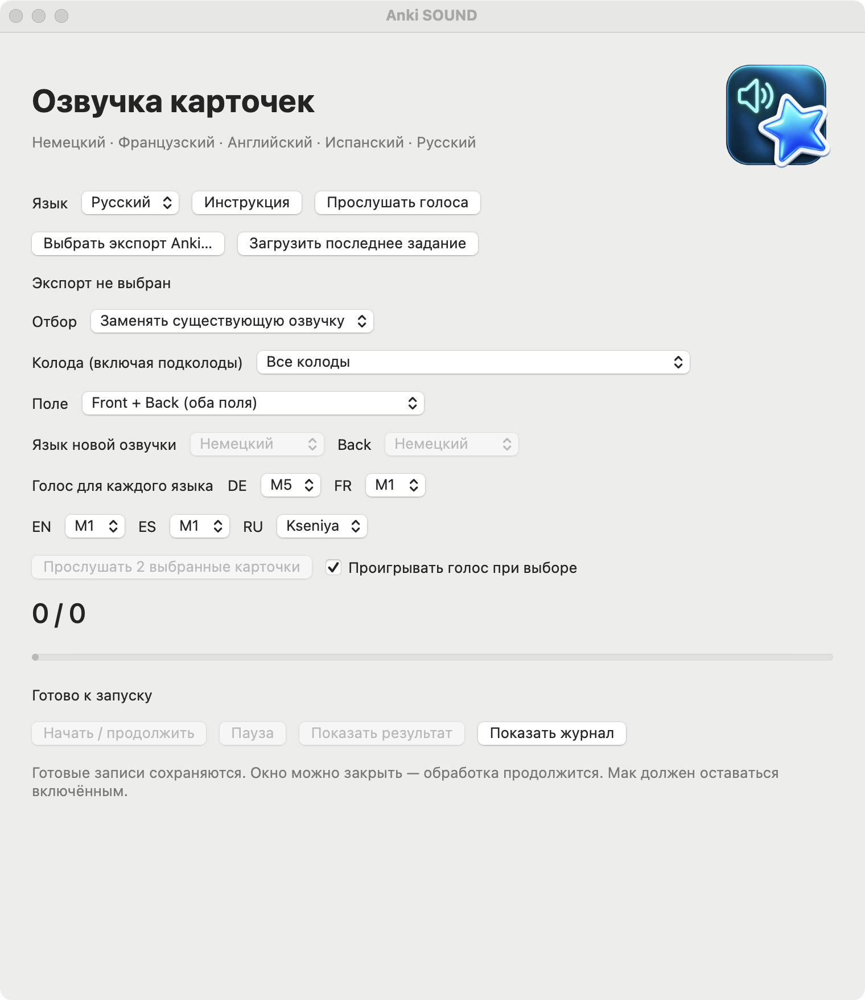

macOS 13+ · Apple Silicon
Anki SOUND
Добавляет локальную озвучку выбранным карточкам Anki и сохраняет отдельный проверенный пакет.
Выпуск · 3.4.11Перед запускомPython 3.9–3.12; интернет для первоначальной установки зависимостей и моделей. Приложение не нотарифицировано Apple.


Как это работает
- Карточки Anki
- Настроить голос
- Добавить озвучку
Первые шаги
Распакуйте всю папку в доступное для записи место. Выполните SETUP.command, затем OPEN.command; выберите экспорт .apkg.